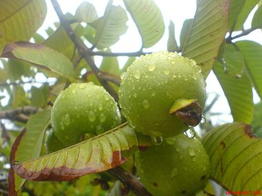

A documented traditional use. Not a claim that it works, and not medical advice. 117 species. Every entry is a documented traditional use, cited in the profile; none is a claim of efficacy, and nothing here is medical advice.
